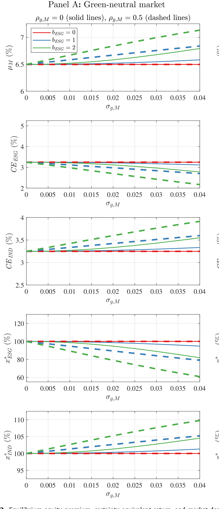
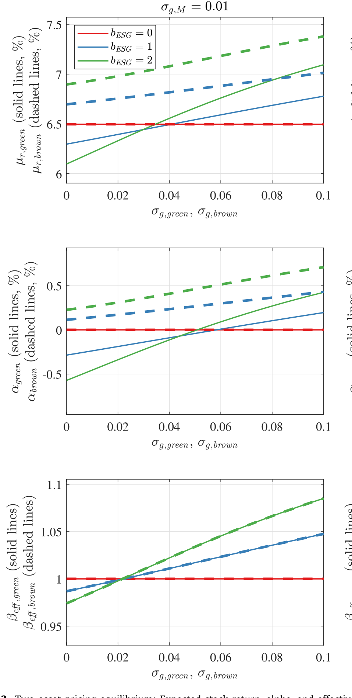
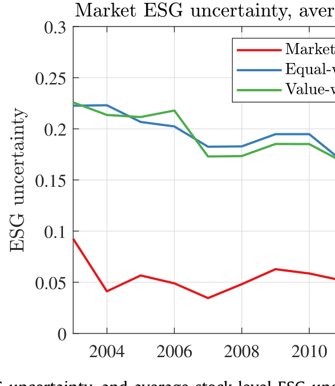
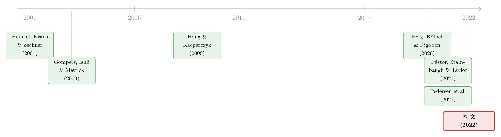

当「绿」本身就说不清：评级分歧如何重写了 ESG 的风险与定价
本文读的是 Avramov, Cheng, Lioui & Tarelli (2022, JFE)：当一家公司到底「有多绿」本身就是一笔糊涂账——六家评级机构各执一词——这种ESG 不确定性会让股票被感知为更有风险，于是需求下降、市场溢价上升；更关键的是，它会在横截面上抬高 CAPM 的 alpha、削弱「绿股低收益」的负向关系。一句话：是评级分歧，而非别的，调和了 ESG 与收益之间那一团乱麻的实证证据。
1 一个尴尬的问题：特斯拉到底绿不绿？
先从一个很多人都听过、却很少认真追问的尴尬说起。
可持续投资 (sustainable investing) 这些年的增长是指数级的。联合国负责任投资原则 (PRI) 的签署机构，从 2010 年的 734 家涨到 2020 年的 3038 家，背后管理的资产规模从 21 万亿美元一路冲到 103 万亿美元。贝莱德的 Larry Fink 在年度信里说，气候变化会带来「金融的根本性重塑」。听上去，资本正排着队涌向「绿色」。
可问题是——你怎么知道哪只股票是绿的？
信用评级市场里，标普和穆迪对同一家公司的评级相关性高达 0.99，分歧几乎可以忽略。但 ESG 评级完全是另一个世界。Berg, Kölbel & Rigobon (2020) 发现，六家主流 ESG 评级机构之间的平均相关性只有 0.54；本文用自己的样本算出来，平均相关性是 0.48。这意味着同一家公司，在一家机构眼里是模范生，在另一家眼里可能只是中游。最有名的例子就是特斯拉：你问不同的评级商，会得到截然相反的答案。
于是一个自然的张力浮现出来：如果连「绿不绿」都说不清，那个想做好事、又想算清风险收益的投资者，到底该怎么办？而这种评级层面的不确定性，又会如何渗进价格里？
这就是这篇论文要回答的问题。它不研究投资者「有多在乎」ESG，而是研究投资者「有多搞不清」ESG——这是一个被此前文献几乎完全忽略的维度。
2 真正要解释的，是一团乱麻
要理解这篇论文的贡献，得先看清它想收拾的是哪个烂摊子。
按照 Pástor, Stambaugh & Taylor (2021a) 那套优雅的均衡逻辑：如果投资者对绿色股票有非金钱偏好 (nonpecuniary benefits)，愿意为持有它们牺牲一点收益，那么绿股的预期收益应该更低、棕股 (brown stocks) 的预期收益应该更高。换句话说，ESG 评分应该和未来收益负相关——绿色越深，alpha 越低。这是一个干净、可证伪的预测。
可是实证证据呢？一团乱麻。Pedersen, Fitzgibbons & Pomorski (2021) 发现综合 ESG 评分对收益的预测力很弱；更早的一批文献则各说各话——Hong & Kacperczyk (2009) 找到了清晰的「罪恶溢价」(sin premium)，Bolton & Kacperczyk (2020) 找到了「碳溢价」(carbon premium)，但 Gompers, Ishii & Metrick (2003)、Edmans (2011) 等用不同的 ESG 代理变量，得到的结论却时正时负、时有时无。
这就是论文真正的靶子：为什么「绿股低收益」这条理论上如此干净的关系，在数据里却如此飘忽？是理论错了，还是我们漏掉了什么？
本文的答案极其简洁——我们漏掉的，是不确定性。罪恶股（烟酒赌博）和碳排放之所以能稳定地显出溢价，是因为它们「绿不绿」界定得非常清楚，评级分歧极小；而其他 ESG 维度难以测量、依赖非标准化的方法，于是分歧巨大、证据混乱。把这条不确定性的轴加进去，混乱本身就成了一种可被解释的规律。
接着，一个自然的问题是：要把「不确定性」写进定价，模型该长什么样？
3 模型：把一只股票，拆成「两只」
论文的理论内核，是在 Pástor et al. (2021a) 的框架上做一处看似很小、实则牵一发动全身的改动：让 ESG 评分本身变成随机的。我们一步步看。
第一步，设定。 考虑一个单期经济：投资者在 0 时刻交易、1 时刻清仓。市场组合的超额收益 \(\tilde{r}_M\) 和它真实但不可观测的 ESG 评分 \(\tilde{g}_M\)，都被写成「均值 + 噪声」的形式：
$$\tilde{r}_M = \mu_M + \tilde{\epsilon}_M$$
$$\tilde{g}_M = \mu_{g,M} + \tilde{\epsilon}_{g,M}$$
这里 \(\mu_M = E(\tilde{r}_M)\) 是预期超额收益，\(\mu_{g,M} = E(\tilde{g}_M)\) 是预期 ESG 评分。\(\sigma_M\) 是收益的标准差，\(\sigma_{g,M}\) 是 ESG 评分的标准差，\(\rho_{g,M}\) 是两者残差之间的相关系数。请记住 \(\sigma_{g,M}\) 这个量——它就是ESG 不确定性的化身：投资者们一致同意 ESG 评分是不确定的，也一致同意它服从某个分布，分歧（disagreement）就体现在这个分布的离散度上。
第二步，偏好。 投资者是「棕色厌恶」(brown aversion) 的，用指数效用 (CARA) 刻画：
$$V(\tilde{W}_1, x) = -e^{-A\tilde{W}_1 - B W_0 x \tilde{g}_M}$$
其中 \(\tilde{W}_1 = W_0(1 + r_f + x\tilde{r}_M)\) 是期末财富，\(x\) 是投在风险资产上的财富比例，\(A\) 是绝对风险厌恶，\(B\) 刻画从持股中获得的非金钱收益。\(B>0\) 表示持有绿股能带来效用，所以 \(BW_0\) 可以理解成相对棕色厌恶。和 Pástor et al. 略有不同的是，这里偏好被设成依赖财富的。
第三步，最优持仓。 对 \(x\) 求一阶条件，得到不确定性下的最优股票头寸：
$$x^* = \frac{1}{\gamma}\,\frac{\mu_M + b\,\mu_{g,M}}{\sigma^2_{M,U}}$$
其中相对风险厌恶 \(\gamma = A W_0\)，棕色厌恶 \(b = B/A\)，而那个关键的分母——投资者事前感知到的市场方差——是
$$\sigma^2_{M,U} = \sigma^2_M + b^2\sigma^2_{g,M} + 2b\,\sigma_M\sigma_{g,M}\rho_{g,M}$$
到这里，真正关键的一步出现了。请看 \(\sigma^2_{M,U}\) 不再等于 \(\sigma^2_M\)。在投资者眼里，这只风险资产变成了两只证券打的包：一只是常规的、付 \(\tilde{r}_M\) 的股票；另一只是「伪资产」，它在绿色市场里付正、在棕色市场里付负，而它的波动正是来自 ESG 评分的不确定性 \(\sigma_{g,M}\)。打包之后，感知到的总方差自然变大了（只要 \(b\ge 0\)、\(\rho_{g,M}\ge 0\)，就有 \(\sigma^2_{M,U}\ge\sigma^2_M\)）。
直觉是什么？当一家公司「有多绿」本身就在抖动时，持有它就多扛了一重风险。 棕色厌恶 \(b\) 越大、评级分歧 \(\sigma_{g,M}\) 越大，这只「伪资产」的分量就越重。论文给出两个极限来夯实这一点：当 \(b\to\infty\) 或当不确定性 \(\sigma_{g,M}\to\infty\) 时，\(x^*\to 0\)——投资者干脆退出股市。也就是说，哪怕市场平均是绿的，一个棕色厌恶的投资者也可能因为「说不清绿在哪」而大幅减仓。
4 核心方程：市场溢价里的三股力
把模型推到均衡——代表性投资者的财富全部投入市场组合，即令 \(x^*=1\)——就能解出市场溢价。这是全文的枢纽。
在 ESG 无差异 (I)、有 ESG 偏好但无不确定性 (N)、有偏好且有不确定性 (U) 三种情形下，溢价依次为 \(\mu^I_M=\gamma\sigma^2_M\)、\(\mu^N_M=\gamma\sigma^2_M - b\mu_{g,M}\)，以及最完整的那个：
这一个方程，把三股力清清楚楚地摆在了一起。第一项 \(\gamma\sigma^2_M\) 是教科书里的风险溢价。第二项 \(-b\mu_{g,M}\) 是 Pástor et al. (2021a) 的核心：当市场是绿的，爱绿的投资者愿意接受更低的溢价。第三项 \(\gamma(\sigma^2_{M,U}-\sigma^2_M)\) 才是本文的增量贡献——评级不确定性把感知风险推高，要求更高的溢价补偿。
于是，「不确定性对市场溢价的净效应」就取决于第二项和第三项的拔河：
- 市场绿色中性 (\(\mu_{g,M}=0\)) 时，第二项消失，只剩第三项，溢价确定上升；
- 市场为绿且投资者棕色厌恶时，两股力方向相反，净效应不确定。
这是一种很「石川」式的结论——它不给你一个简单的箭头，而是告诉你箭头的方向取决于哪股力更强。同样的拔河也作用在均衡夏普比率上。

Figure 2: Equilibrium equity premium, certainty equivalent return, and market
校准（市场波动率与风险厌恶取合理值，投资域为无风险资产 + 市场组合）进一步把这种力量可视化：一旦把 ESG 不确定性纳入考量，ESG 敏感型投资者对市场组合的需求、以及他们的确定性等价收益率 (certainty equivalent return) 都会显著下降。论文据此强调：评级分歧不只是一个测量噪声，它实实在在地伤害了风险-收益权衡、社会影响与经济福利。
5 横截面：alpha 抬头，「绿股低收益」松动
把单资产推广到多资产，才真正接上了第 2 节那团乱麻。
论文推出一个CAPM 表征，其中 alpha 和 beta 都随个股的 ESG 不确定性而变。这里有个精妙的概念叫有效 beta (effective beta)：传统 CAPM 的 beta 建立在实际收益的协方差/方差上，而有效 beta 建立在「ESG 调整后收益」的协方差/方差上——市场收益和个股收益都被加上了一个随机的 ESG 成分（绿为正、棕为负）。至于 alpha：当不确定性被忽略时，CAPM 的 alpha 纯粹反映「愿意持有绿股」的非金钱动机，于是 ESG 与 alpha 负相关；一旦把不确定性加回去，均衡 alpha 随不确定性上升，负向的 ESG-alpha 关系被削弱。

Figure 3: Two-asset pricing equilibrium: Expected stock return, alpha, and effective
这正是收拾乱摊子的关键：理论预测的「绿股低 alpha」，只在低不确定性的子样本里成立；在高不确定性的股票里，这条关系会变得不显著、甚至反号。混乱不是噪声，是被不确定性这条轴折叠起来的结构。
6 数据与实证：让模型落地
接着，论文用美国普通股 2002–2019 年的数据去检验。
ESG 数据来自六家主流机构：Asset4 (Refinitiv)、MSCI KLD、MSCI IVA、Bloomberg、Sustainalytics、RobecoSAM。处理很直接：六家评分的均值作为公司层面的 ESG 评级，六家评分的标准差作为 ESG 不确定性。分歧在整个样本期里都相当持久。

Figure 1: Market ESG ratings and ESG uncertainty, and average stock-level ESG
需求侧。 论文把机构分成三类：规范约束型机构 (norm-constrained institutions，如养老金、大学和基金会捐赠基金)、对冲基金、其他机构。规范约束型机构最可能做社会责任投资。结果与模型预测高度吻合：在高 ESG 评级的股票里，规范约束型机构持有低不确定性股票的 22.8%，却只持有高不确定性股票的 18.1%——下降了约 21%。也就是说，哪怕 ESG 意识在增长，评级分歧仍在持续地把绿色需求往下压。对冲基金这边，分歧同样起到了抑制投资的作用。
（关于谁在持有 ESG、又为什么持有，可参见《投资者并不相信 ESG 能赚钱，却仍有人重仓——四个事实背后的一道算术》与《三万五千亿美元的 ESG，到底「倾斜」了多少？》。）
收益侧。 论文先按 ESG 不确定性把股票分成五组，再在每组内按 ESG 评级分成五组（双重排序）。结果干净利落：在低不确定性股票里，ESG 评级与未来收益负相关——棕股每月跑赢绿股 0.59%（原始收益），CAPM 调整后是 0.40%/月，为 Pástor et al. (2021a) 的预测提供了支持。但在高不确定性股票里，这条负向预测力消失了。 结论对替换风险因子、加入公司特征控制的 Fama-MacBeth (1973) 回归都稳健，而且在 2011 年前的子样本里更强。
为什么 2011 年前更强？因为本文是个静态模型、刻画的是预期收益；而 Pástor et al. (2021b)（《绿色资产涨得越好，越不该期待它继续涨》）指出，过去十年绿股事后跑赢，是因为环保关切意外地大幅上升——这是事前预期之外的实现值。把这段「意外」剔掉，长期均衡的力量反而显得更清楚。
到这里，故事闭环了：罪恶溢价、碳溢价之所以稳定，是因为这些维度界定清楚、不确定性低；其余 ESG 维度的混乱证据，恰恰是高不确定性的产物。评级分歧，是那条一直缺席的解释变量。
7 文献脉络
把这条线索捋一捋，会看到一个很清晰的接力。
最早，Heinkel, Kraus & Zechner (2001) 研究了绿色投资如何改变公司行为，奠定了「投资者偏好影响企业」的思路。接着，实证派沿着「某种 ESG 属性是否被定价」展开：Hong & Kacperczyk (2009) 的罪恶溢价、Gompers, Ishii & Metrick (2003) 的公司治理、Edmans (2011) 的员工满意度、Bolton & Kacperczyk (2020) 的碳风险——一篇篇都在问「绿（或棕）值多少钱」，但答案彼此打架。

然后，一个自然的问题是：能不能在一般均衡里把这件事讲清楚？Pástor, Stambaugh & Taylor (2021a) 给出了那个优雅的、确定性 ESG 评分的框架，预测了负向的 ESG-alpha；Pedersen, Fitzgibbons & Pomorski (2021) 则把 ESG 嵌进有效前沿。与此同时，另一条线——Berg, Kölbel & Rigobon (2020) 的「aggregate confusion」、Gibson Brandon, Krueger & Schmidt (2021) 的评级分歧与收益——开始系统地记录「评级机构到底有多不一致」。
但真正关键的一步，是把这两条线接起来。 本文站的就是这个交汇点：它承认 Pástor et al. (2021a) 的偏好框架，却把那个被假设为确定的 ESG 评分换成不确定的，于是 Berg et al. (2020) 记录的「分歧」第一次被翻译成了均衡里的溢价、需求、alpha 与 beta。它欠 Pástor et al. 一份理论上的债，又用不确定性这把钥匙，打开了实证那团乱麻。
8 评论与延伸（Q&A + 研究方向）
(a) 几个可能的疑问
Q：ESG「不确定性」和「分歧」「信息质量」，到底是不是一回事？
在本文里它们被刻意做成一回事：投资者一致同意 ESG 评分不确定、也一致同意其分布，分歧只体现在分布的离散度 \(\sigma_{g,M}\) 上。这与「投资者对同一信息质量看法不同」那类模型（如《分歧本身没那么重要，重要的是「信息质量」在变》）不同——本文没有让投资者各持己见、互相博弈，而是让大家共同面对一个「测不准」的真值。这是它和 Pástor et al. (2021a) 中「投资者教条地相信各自感知」最本质的区别。
Q：为什么不确定性能同时「抬高溢价」又「压低需求」，这不矛盾吗？
不矛盾，因为它们是同一枚硬币。感知方差 \(\sigma^2_{M,U}\) 上升，意味着每单位风险的吸引力下降——于是个体投资者想减仓（需求下降）；而在均衡里，要让代表性投资者仍愿意持有全部市场，价格必须给出更高的补偿（溢价上升）。需求曲线和均衡价格说的是一件事的两面。
Q：双重排序的识别可信吗？会不会只是规模、流动性在作怪？
这是最该警惕的地方。论文用了加入公司特征控制、替换多种风险因子的 Fama-MacBeth (1973) 回归来缓解，结果稳健。但要承认，ESG 不确定性高的公司，往往也是信息环境差、规模可能更小的公司，与流动性、特质波动等高度纠缠。本文是相关性证据而非干净的因果，这点要诚实。
Q：这是不是推翻了 Pástor et al. (2021a) 的负 ESG-alpha 预测？
恰恰相反，它包住了那个预测。当不确定性趋于零，本文退化为确定性情形，负向 ESG-alpha 重新成立——这正是低不确定性子样本里看到的
0.40%/月。本文做的是把那个预测从「全样本」收缩到「它真正成立的角落」，并解释了它在别处为何失效。
Q：那为什么罪恶溢价、碳溢价反而总能稳定地被找到？
因为「罪恶」（烟酒赌博）和「碳排放」界定得极其清楚，评级机构几乎不会分歧，属于低不确定性维度。按本文逻辑，低不确定性正是负向 ESG-收益关系最该成立的地方。所以这两个溢价的稳健，本身就是对模型的旁证。
Q：一个静态、只讲预期收益的模型，怎么解释过去十年绿股事后跑赢？
本文不直接解释事后收益，它交给了 Pástor et al. (2021b)：绿股事后跑赢，是因为环保关切意外上升带来的未预期重定价。本文也确认自己的结论在 2011 年前更强——把那段「意外」剔掉，长期均衡的力量更清晰。两篇是互补而非冲突。
(b) 几个可能的研究问题与提案
1. ESG 评级不确定性与公司债定价。
【经济故事】本文的逻辑是「说不清绿在哪 → 感知风险上升 → 要求更高补偿」。债券市场对这种逻辑应当更敏感：信用利差 (credit spread) 直接定价风险，而高 ESG 不确定性的发行人，理论上应承担更高的利差。 【可行性】高。数据现成：TRACE 的债券交易 + 六家 ESG 评级算分歧 + Compustat 基本面控制。识别上可借鉴本文的双重排序（不确定性 × 评级），看利差是否在低不确定性样本里才显出「绿色折让」。
2. 外资持有人是否更回避高不确定性的「绿色」资产。
【经济故事】规范约束型机构会减持高不确定性绿股；那么信息更不对称的外国机构投资者，面对一套自己更难核实的本土 ESG 评级，是否回避得更狠？这把「评级分歧」和「外资持有人的信息劣势」两条线接起来。 【可行性】中。数据：FactSet/13F 区分外资持股 + 各国 ESG 评级分歧。难点是要把 ESG 不确定性从一般的「外资本土偏好」里干净地剥离出来。
3. 用披露标准化作为「不确定性下降」的自然实验。
【经济故事】本文的政策含义是：统一 ESG 披露 → 降低不确定性 → 压低绿色企业的资本成本。欧盟分类法 (EU Taxonomy)、SFDR 这类强制披露，恰好提供了一次外生的不确定性冲击。 【可行性】中。可用双重差分 (difference-in-differences, DiD)，比较受监管约束与不受约束的发行人在披露新规前后的评级分歧、资本成本变化。挑战在于平行趋势与监管的内生选择。
4. ESG 不确定性与债券二级市场流动性。
【经济故事】如果不确定性让资产被感知为「两只证券打的包」，那它不仅该进溢价，也该进流动性——做市商面对一个更难定价的标的，会拉宽买卖价差。 【可行性】高。TRACE 估流动性指标（如价格冲击、bid-ask）+ ESG 评级分歧，检验高不确定性债券是否更不流动、且这种不流动是否在 ESG 关切高涨期被放大。
9 我的判断与参考文献
贡献。 这篇论文最漂亮的地方，是用一个极小的模型改动（让 ESG 评分从确定变成不确定），同时收获了三件事：均衡层面的溢价与需求结论、横截面的 alpha-beta 表征，以及对「ESG-收益混乱证据」的统一解释。它把 Berg et al. (2020) 那条「评级有多不一致」的测量文献，第一次干净地翻译进了资产定价。\(\sigma^2_{M,U}\) 那个「两只证券打包」的几何直觉，尤其优雅。
对识别的担忧。 实证部分是相关性而非因果。ESG 不确定性与信息环境、规模、特质波动、分析师覆盖高度纠缠，双重排序和 Fama-MacBeth 控制只能缓解、不能根除内生性。此外，用六家机构评分的「标准差」作为不确定性代理，混入了方法论差异、覆盖差异等多种来源——它是不确定性的代理，但不是唯一干净的那一个。模型是静态的，把「不确定性」与「分歧/学习」压成了同一个对象，也牺牲了一些动态含义。
后续想看到的。 我最想看到的是把这套逻辑搬到信用市场：公司债的利差与流动性，理论上对「说不清的绿」应当更敏感，而 TRACE 数据足以做一次干净的检验。其次是一个真正外生的不确定性冲击（如强制披露新规），用 DiD 把「降低分歧 → 降低绿色企业资本成本」这条政策含义验证出来——如果成立，它就不只是学术结论，而是给监管者的一份清单。
参考文献
- Avramov, D., Cheng, S., Lioui, A., & Tarelli, A. (2022). Sustainable investing with ESG rating uncertainty. Journal of Financial Economics 145(2), 642–664.
- Berg, F., Kölbel, J. F., & Rigobon, R. (2020). Aggregate confusion: The divergence of ESG ratings. SSRN Working Paper 3438533.
- Bolton, P., & Kacperczyk, M. T. (2020). Do investors care about carbon risk? Journal of Financial Economics (Forthcoming).
- Edmans, A. (2011). Does the stock market fully value intangibles? Employee satisfaction and equity prices. Journal of Financial Economics 101(3), 621–640.
- Fama, E. F., & MacBeth, J. D. (1973). Risk, return, and equilibrium: Empirical tests. Journal of Political Economy 81(3), 607–636.
- Gibson Brandon, R., Krueger, P., & Schmidt, P. S. (2021). ESG rating disagreement and stock returns. Financial Analysts Journal (Forthcoming).
- Gompers, P., Ishii, J., & Metrick, A. (2003). Corporate governance and equity prices. Quarterly Journal of Economics 118(1), 107–156.
- Heinkel, R., Kraus, A., & Zechner, J. (2001). The effect of green investment on corporate behavior. Journal of Financial and Quantitative Analysis 36(4), 431–449.
- Hong, H., & Kacperczyk, M. (2009). The price of sin: The effects of social norms on markets. Journal of Financial Economics 93(1), 15–36.
- Pástor, L., Stambaugh, R. F., & Taylor, L. A. (2021a). Sustainable investing in equilibrium. Journal of Financial Economics (Forthcoming).
- Pástor, L., Stambaugh, R. F., & Taylor, L. A. (2021b). Dissecting green returns. SSRN Working Paper 3864502.
- Pedersen, L. H., Fitzgibbons, S., & Pomorski, L. (2021). Responsible investing: The ESG-efficient frontier. Journal of Financial Economics (Forthcoming).